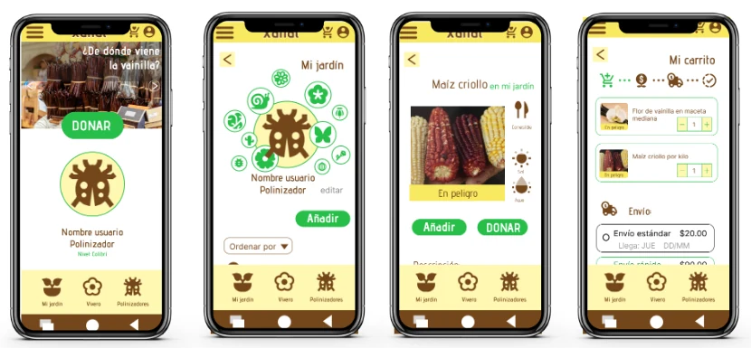

Haz clic en una imagen para ampliarla
Contexto
Proyecto individual realizado en 6 semanas, como uno de los tres proyectos finales del Google UX Design Certificate (Coursera). Xanat es una organización ficticia enfocada en la protección, propagación y cuidado de flora en peligro de extinción en México. Mi rol: diseñadora UX a cargo de la concepción y el diseño de la aplicación y del sitio web adaptable, de principio a fin.
El problema
Más de 60 especies endémicas de México están en peligro de extinción por la destrucción de hábitats, la introducción de especies no endémicas y las plagas — un desequilibrio que además empuja a los polinizadores hacia zonas vulnerables. El reto: diseñar una herramienta que eduque sobre el cuidado de estas especies, mejore la calidad de vida de las personas involucradas y apoye a las comunidades agrícolas que dependen de ellas.
Proceso de investigación
Revisé el marco teórico en fuentes como SAGARPA y el Jardín Botánico de la UNAM para construir las preguntas de entrevista. Tuve poca participación de usuarios reales — principalmente familiares —, complementada con entrevistas simuladas como parte del ejercicio. Aun con esa limitación, el hallazgo fue claro: la mayoría de las personas no sabía cuántas o cuáles especies están en peligro, pero estaba dispuesta a ayudar si tuviera una herramienta sencilla que la guiara.
Con esos hallazgos hice un ejercicio de ideación centrado en educación y orientación — cómo incluir estas especies en la vida diaria de alguien sin conocimiento previo — y definí la arquitectura de información con un mapa de sitio (Jardín, Vivero, Carrito, Acerca de) que después guio cada pantalla.
Lo que construí
Del papel al prototipo
Partí de esquemas en papel, luego wireframes digitales y un prototipo de baja fidelidad para las pruebas de usabilidad.
Lo que cambiaron las pruebas
Los resultados cambiaron decisiones concretas: la pantalla de inicio dejó de mostrar el estado de la planta nueva y pasó a presentar diapositivas de cuidados de plantas, comunidades agrícolas y noticias sobre el avance en la protección de especies, y agregué la opción de “comprar” en las fichas de especie (como semilla, planta o derivado, según las condiciones legales de cada una).
Alta fidelidad y diseño adaptable
Construí el prototipo de alta fidelidad conservando el mismo flujo, y diseñé el producto en tres formatos — sitio web móvil, app móvil y sitio web de escritorio — con jerarquía tipográfica clara y etiquetas pensadas para lectores de pantalla.
Reflexión
Los usuarios que probaron el prototipo comentaron que el lenguaje y la distribución se sentían amigables, incluso para un tema que podría parecer solo para especialistas. Lo que aprendí: aunque el problema sea grande, recorrer con disciplina cada paso del proceso y ajustarse a las necesidades de las personas ayuda a encontrar soluciones viables y útiles. Con más tiempo, haría otra ronda de pruebas de usabilidad para validar los cambios, agregaría formas más entretenidas de sostener el interés de quienes usan la app y buscaría acercarme a más comunidades agrícolas.